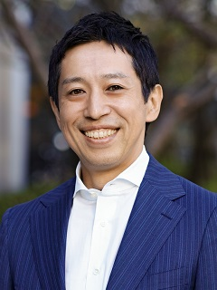

緊急事態宣言の解除とそれに伴って行動制限の無い期間が増え、次第に都内のオフィス街や電車の中には人が溢れるようになりました。
まだまだ予断は許さない状況とはいえ、コロナ禍と付き合いつつ、少しずつ日常を取り戻しているという実感があります。
しかし「働き方」という側面からみると、一気に普及したリモートワークから以前のようなオフィス勤務中心のスタイルへの完全回帰が最適解なのか。
働きやすさと働き甲斐、生産性の向上、ワークライフバランスなどの観点からオフィスワークとリモートワークが融合したハイブリッドワークというスタイルについて様々な角度から考察し、理解を深めていきたいと思います。
開催概要
| 名称 | ハイブリッドワーク最前線 イノベーティブな組織をつくるバーチャルとリアルの最適解 |
|---|---|
| 会期 | 2022年10月20日（木）13:30～15:10 |
| 開催形態 | オンライン開催 |
| 主催 | 日経BP |
| 協賛 | oVice、レコモット |
| 協力 | 日経クロステック、日経クロステックActive 日経コンピュータ、日経NETWORK、 日経BP 総合研究所 |
| 参加方法 | 事前登録制（登録無料） |
プログラム
- 講演日時
- 2022/10/20（木） 13:30 ～ 14:00
【基調講演】
ハイブリッドワークを成功に導く5ルール
～再現確率89%の方法
出社と在宅勤務のバランス、メンバー間のコミュニケーション等、ハイブリッドワーク下での難しさを感じる人も多いのではないでしょうか？この講演では、これまで815社の働き方改革の支援をしてきたクロスリバー代表の越川氏が、ハイブリッドワークが成功している組織に共通する5つのルールを紹介します。
-

クロスリバー
代表取締役CEO／アグリゲーター越川 慎司 氏
- 働き方／ワークプレイス
- 講演日時
- 2022/10/20（木） 14:05 ～ 14:35
リモートもオフィスも「同じ空間」で働く！今年からの新しい職場環境がもたらすインパクト
リモートワーカーとオフィスワーカーの断絶が課題となってきている昨今、同時に全員がオフィスに来ることの現実的な難しさにも直面しています。そのようなチャレンジの中、oViceが実現しているのは、『働く場所を問わずに「同じ空間」を共有して働くこと』本セッションでは既に実現をしているお客様の例をご紹介しながら、その意味と価値についてお伝えします。
-
oVice
COO田村 元 氏
- セキュリティー
- 働き方／ワークプレイス
- 講演日時
- 2022/10/20（木） 14:40 ～ 15:10
3つのハイブリッドで、コストもセキュリティも納得の環境を実現させる！
長引くコロナ禍で改めて注目されるハイブリッドワーク。対応できない企業は、人材確保、業務効率化などを損ね業績悪化が懸念されます。「リアル＆デジタル」「社給＆BYOD」「多様なアクセスとセキュリティ対応」の3つのポイントより、コスト削減も叶える最適なハイブリッドワーク実現方法を事例も交えてご紹介します。
-
レコモット
セールス＆マーケティング部朝倉 貴子 氏
講演内容は予告なく変更になる場合がございます。予めご了承ください。